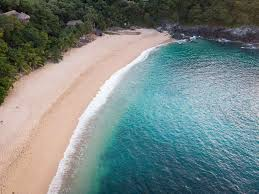
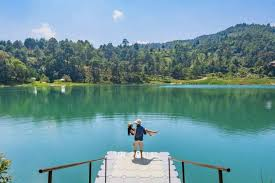

Aprende mas sobre el tipo de lugar presionando la imagen.
Playas.
Selvas.
Desiertos.

El turismo dentro del territorio mexicano es bastante extenso debdio a que es bastante extenso territorialmente biodiverso desde zonas deserticas hasta zonas totalmenete humedas como la selva tropical.
San Miguel de Allende es una ciudad del estado mexicano de Guanajuato. Es parte de la macrorregión del Bajío.Es cabecera del municipio homónimo y uno de los principales destinos turísticos de México. Se encuentra a una altitud de 1910 m y está situada a 315 kilómetros de la Ciudad de México, a 100 km de Guanajuato, a 165 km de León, y a 50 km de Santiago de Querétaro. En 2002 se declaró a San Miguel como Pueblo Mágico, siendo retirado este título en 2008 debido a que el 7 de julio de 2008 fue inscrita por la Unesco como Patrimonio cultural de la Humanidad, bajo el título de Villa Protectora de San Miguel y Santuario de Jesús Nazareno de Atotonilco, la distinción se otorgó debido a su aporte cultural y arquitectónico al Barroco mexicano y a su importancia en la lucha de Independencia de México de España.
Tepoztlán es un pueblo del estado de Morelos, en el centro-sur de México. El pueblo funciona como asiento gubernamental del municipio del mismo nombre. La cabecera tiene una población de 14,130 habitantes, mientras la municipalidad contó en 2020 con 54,987 habitantes, de acuerdo con el INEGI. El pueblo es un destino turístico popular, debido a su cercanía con la Ciudad de México y su muy agradable clima. Es famoso por los restos de la pirámide construida en la cima de la montaña el Tepozteco, y también por los exóticos helados preparados por la gente del pueblo, así como sus artesanías. Tepoztlán es considerado como un lugar místico por sus leyendas y sus tradiciones que aún se respetan por los mismos habitantes, mucha gente lo visita ya que todo el año está lleno de festejos que la gente hace dependiendo el barrio en el que viva. Una de las festividades más esperadas es el Día de Muertos en la que la gente sale con sus hijos a "pedir calaverita" llevando un tradicional chilacayota en forma de calavera.
El actual pueblo de Bernal, fue fundado en 1647 por el teniente Alonso Cabrera (apellido Almeriense donde se encuentra el peñón del Bernal original), que se transladaba, junto a los primeros pobladores del pueblo, de la población de Cadereyta para construir una población que resguardara a los pobladores de la zona de los constantes ataques de incursiones pames y chichimecas, durante gran parte de los siglos XVII y XVIII, Bernal fue considerado el límite sur de la Gran Chichimeca, vasta zona formada por el norte de los hoy estados de Querétaro y Guanajuato y gran parte de San Luis Potosí y Zacatecas, en donde grupos étnicos Chichimecas, Pames y Jonaces, luchaban contra los colonizadores. La elección del lugar de la fundación se dio al considerársele seguro y elevado, desde donde se podía vigilar la zona, el primer edificio construido fue el cuartel en el cual se alojaron los soldados, posteriormente comenzaron a llegar más habitantes que fueron construyendo otros edificios. El cuartel fue sustituido por un presidio más elaborado, y luego fue construido el edificio gubernamental hoy conocido como las Casas Reales. Pronto Bernal comenzó a consolidarse como población y se construyeron la mayor parte de los edificios y casas coloniales hoy visibles, siendo uno de los pueblos más ricos arquitectónicamente del estado.
Valle de Bravo (Temazcaltepec, en náhuatl y Pameje, en mazahua) es una ciudad mexicana del Estado de México, ubicada a 156 km al suroeste de la Ciudad de México. Su fundación hispánica fue en 1530 por frailes franciscanos. Recibe su nombre por San Francisco del Valle y por el general Nicolás Bravo. La economía de la localidad depende del turismo, ya que recibe turistas nacionales y extranjeros todo el año; es además una pequeña ciudad administrativa y de residencia de descanso por sus bellezas naturales. Fue nombrada ciudad típica en 1971 y pueblo mágico en 2005. Valle de Bravo cuenta con un embalse por la Presa Miguel Alemán o Valle de Bravo, popularmente llamada «la laguna» o «el lago», que fue creada en 1947 como parte del Sistema Hidroeléctrico Miguel Alemán, de la región hidrológica del río Balsas. El sistema hidroeléctrico ya no está en operación, no obstante, en la actualidad el mecanismo es parte del Sistema Hidráulico de Cutzamala, a cargo de la Comisión Nacional del Agua (CONAGUA), que se encarga de abastecer con agua potable a la zona metropolitana de Ciudad de México y Toluca. Esta presa, que ocupa el territorio donde estuvo la planicie del valle y parte del antiguo pueblo, es esencial para la población por la derrama económica que genera al ser un atractivo turístico donde se realizan actividades acuáticas y deportes extremos; el conjunto del pueblo de estilo colonial y su ubicación en lo alto de las montañas, conforma una armonía ecosistémica que provee un deleite estético a sus visitantes.
Cancún (del maya: Kaan kuum ‘olla o nido de serpientes’) es una ciudad planificada mexicana ubicada en el estado de Quintana Roo, cabecera del municipio de Benito Juárez. Es la ciudad más poblada del estado, con 888 797 habitantes según el censo del Instituto Nacional de Estadística y Geografía en 2020. Considerada un destino turístico de talla mundial, con certificación de la Organización Mundial del Turismo, el proyecto de su desarrollo inició operaciones en 1974 como Centro Integralmente Planeado, pionero de Fonatur (Fondo Nacional de Fomento al Turismo), antes conocido como Infratur. En pocos años, tuvo una notable transformación, ya que, de ser una isla de pescadores rodeada de selva virgen y playas desconocidas, en la actualidad es el centro turístico mexicano más reconocido en el mundo. La Organización Mundial del Turismo (OMT), a través de la Fundación OMT-Themis concedió el premio Lo Mejor de lo Mejor a la excelencia y la gobernanza al Fideicomiso de Promoción Turística de Cancún el 3 de febrero de 2007. Cancún se convirtió de esta forma en un organismo avalado por el Departamento de Educación y Gestión del Conocimiento de la OMT. Actualmente Cancún es el destino que recibe más turistas internacionales de México, junto con la Ciudad de México y la Riviera Maya. Además el Aeropuerto Internacional de Cancún es el segundo con más movimiento de pasajeros, lo que convierte a Cancún en el principal destino turístico de México. Para el 2020, el número de llegadas de pasajeros internacionales fue de 8.1 millones de pasajeros (Statista, 2023).
Oaxaca, oficialmente el Estado Libre y Soberano de Oaxaca, es uno de los treinta y un estados que, junto con la Ciudad de México, forman México.Su capital y ciudad más poblada es Oaxaca de Juárez. Está dividido en 570 municipios, de los cuales 418 se gobiernan bajo el sistema de usos y costumbres, con formas locales reconocidas de autogobierno. Está ubicado en la región suroeste del país. Limita al norte con Puebla y Veracruz, al este con Chiapas, al sur con el océano Pacífico y al oeste con Guerrero. Con 93 757 km², es el quinto estado más extenso —por detrás de Chihuahua, Sonora, Coahuila y Durango— y, con 4 132 148 de habitantes en 2020, el décimo más poblado. Se fundó el 21 de diciembre de 1823.[cita requerida] El estado es conocido principalmente por sus pueblos indígenas y afromexicanos, representados por más de 16 grupos étnicos, y los zapotecos y mixtecos son los de mayor representación. Estas culturas han sobrevivido y mantenido sus usos y costumbres con mayor éxito que el resto del territorio nacional, gracias al accidentado y aislado territorio del estado.La mayoría de estos grupos habitan la zona centro del estado, cuya riqueza cultural, que incluye zonas arqueológicas como Monte Albán y Mitla, la convierten en una zona turística de importancia.
Tepotzotlán es un pueblo virreinal mexicano, uno de los ocho pueblos y cabecera municipal del municipio homónimo en el Estado de México. El municipio forma parte de la zona metropolitana del Valle de México. Localizado a 43.5 km al noroeste del centro de la Ciudad de México. Su principal atractivo turístico es el Museo Nacional del Virreinato, el cual utiliza como infraestructura lo que fue el Colegio Jesuita de San Martín y San Francisco Javier y el templo de San Pedro Apóstol, construidos entre los siglos XVII y XVIII por la Compañía de Jesús. Tepotzotlán forma parte del programa turístico Pueblos mágicos de México.Es considerado el municipio más colonial del Valle de México ya que posiblemente su fundación fue en tiempos de la Conquista.
Ubicado entre las ciudades de México y Toluca, el municipio de Ocoyoacac tiene para el visitante un sinfín de bellezas naturales contenidas en el maravilloso ecosistema del Parque Nacional Miguel Hidalgo, más conocido como La Marquesa, conformado por bosques, peñas, arroyos, cascadas, valles, monumentos históricos y senderos idílicos. Pero la modernidad también está presente con un centro de investigación de energía nuclear y un centro de estudios del Colegio Nacional de Educación Profesional Técnica. El poblado de Ocoyoacac, ubicado en la rivera del río Lerma, conserva su ambiente provinciano. Sus callejuelas de diferentes desniveles permiten apreciar el paisaje de esta campiña siempre verde, las casas tradicionales con sus tejas rojas y las cúpulas de color terracota de sus iglesias. Junto a su plaza principal, ubicada en el centro, está la iglesia de San Martín Obispo del siglo XVII, remodelada recientemente en un estilo neoclásico
En un hermoso valle de exuberante vegetación al pie de las montañas se ubica Malinalco, Pueblo Mágico ancestral de calles empedradas y casas multicolores. Sus calles están salpicadas de flores que brotan de las paredes de sus casonas coloniales y de pequeños templos de los siglos XI, XVII y XVII que te transportarán en un viaje por el pasado de México. El cerro de los ídolos aguarda la zona arqueológica de Malinalco, una de las más bellas del estado y dónde se aprecia una magnífica panorámica del pueblo.
Mazatlán (del náhuatl: Masatlan ‘Lugar de venados’) es una ciudad ubicada en el estado mexicano de Sinaloa, cabecera del municipio del mismo nombre. Es apodada como «La perla del Pacífico». De acuerdo con el Censo de Población y Vivienda 2020, Mazatlán tenía una población de 441 975 habitantes por lo que se mantiene como la segunda ciudad más poblada de Sinaloa, después de Culiacán. El puerto de Mazatlán es uno de los principales destinos turísticos de playa de México del litoral del océano Pacífico. Se ubica a 21 kilómetros al sur del trópico de Cáncer. La ciudad se ha ido extendiendo con nuevas colonias, infraestructura, complejos turísticos y muchos kilómetros de playa localizada a lo largo de la zona costera que recorre 17 kilómetros.